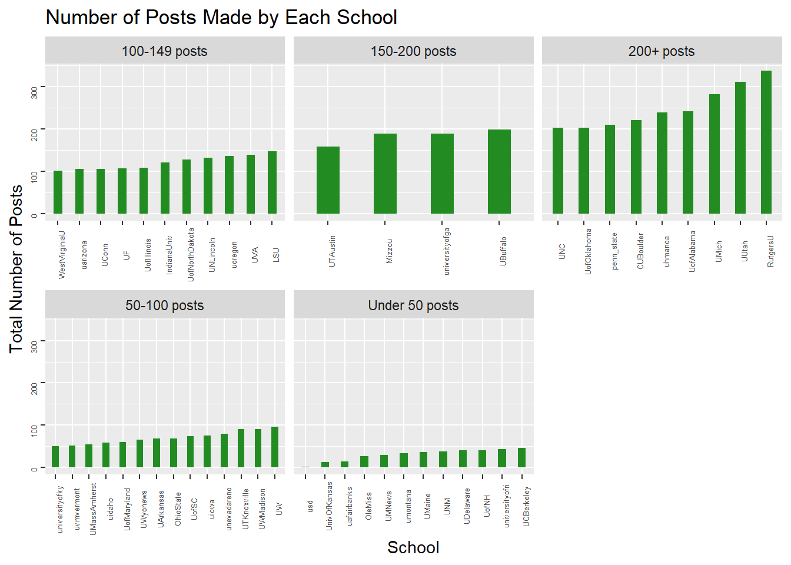
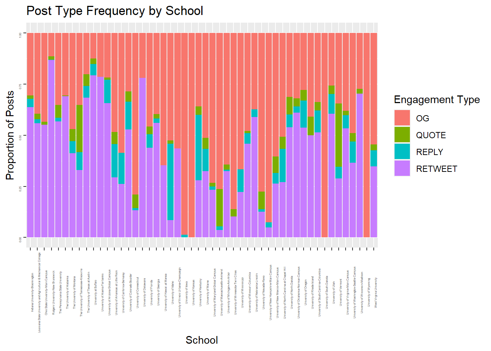
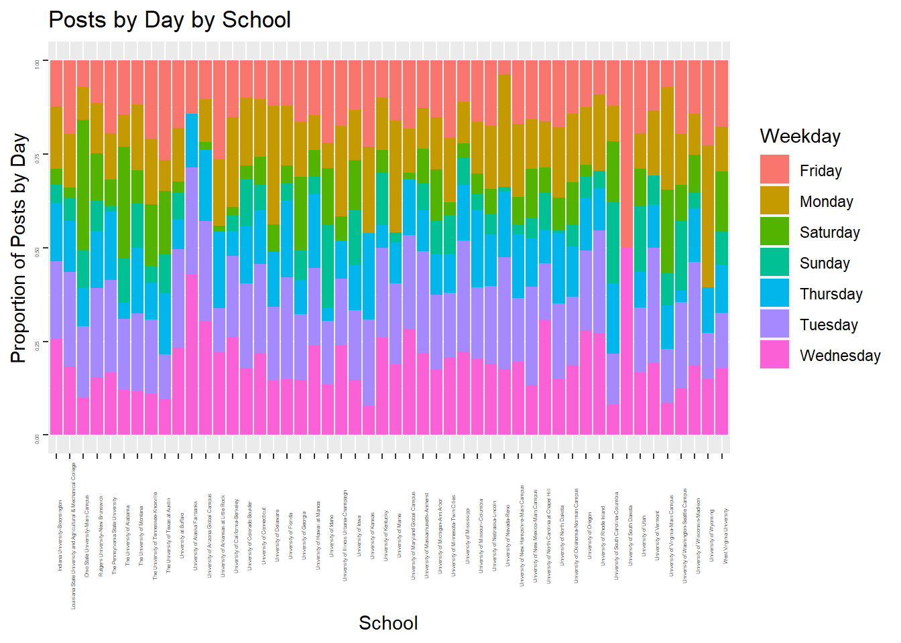
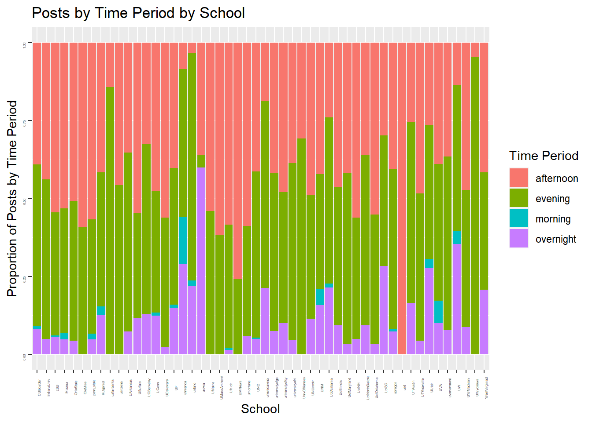
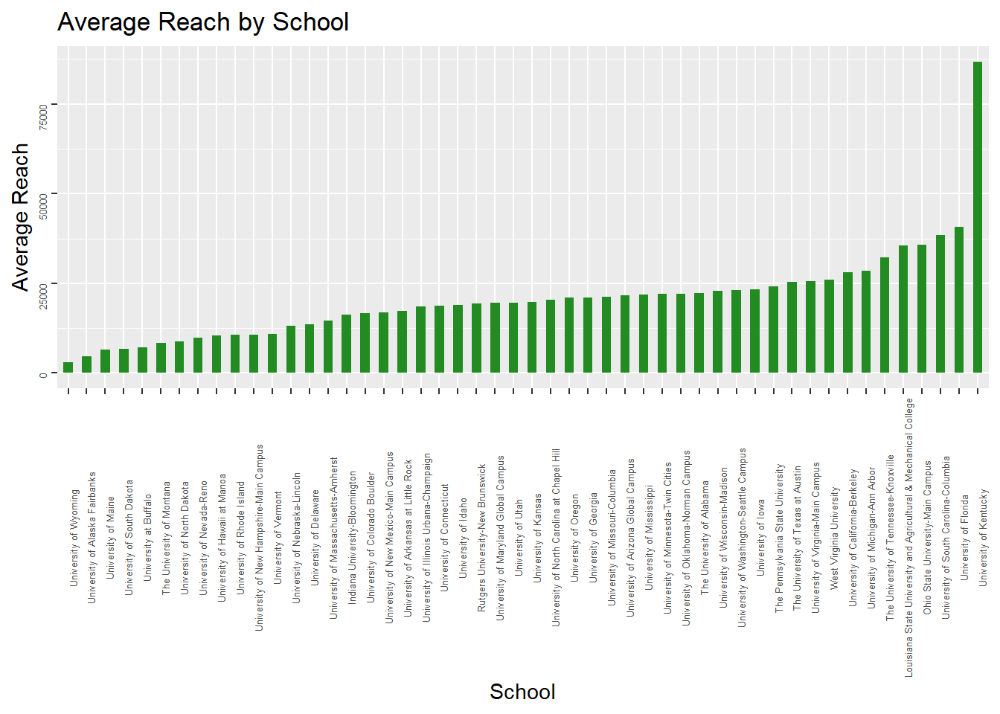
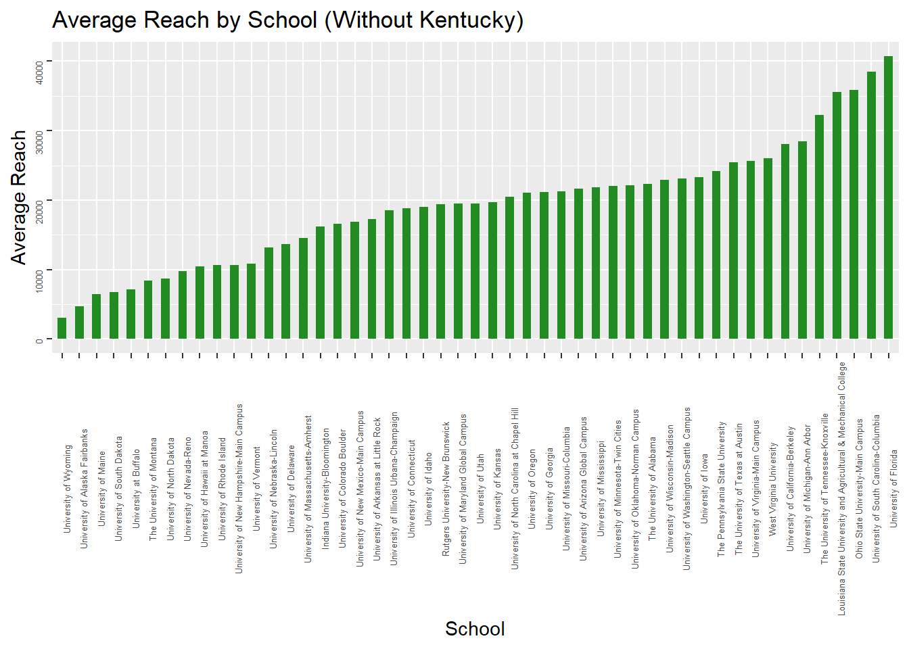
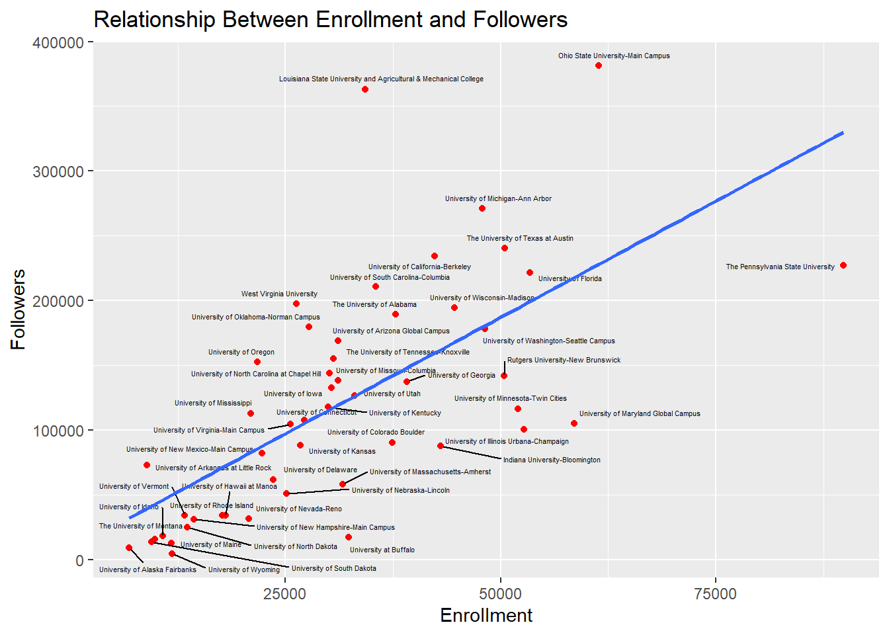
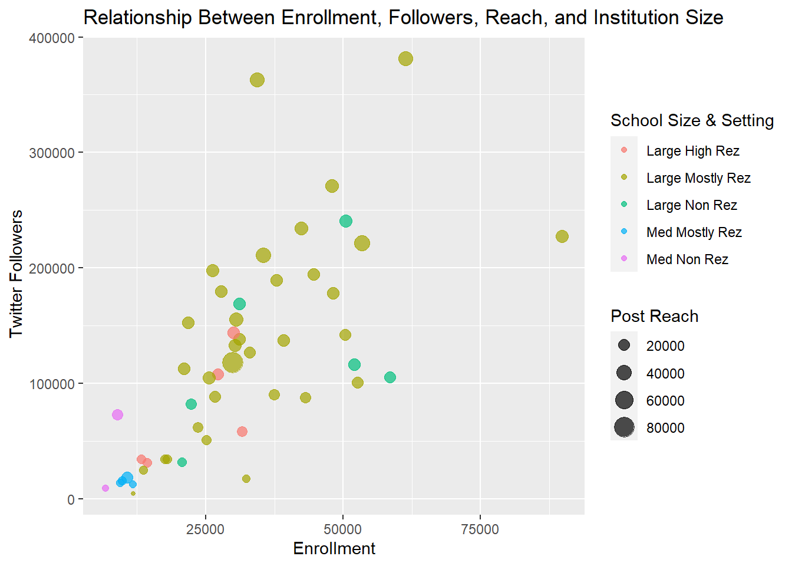
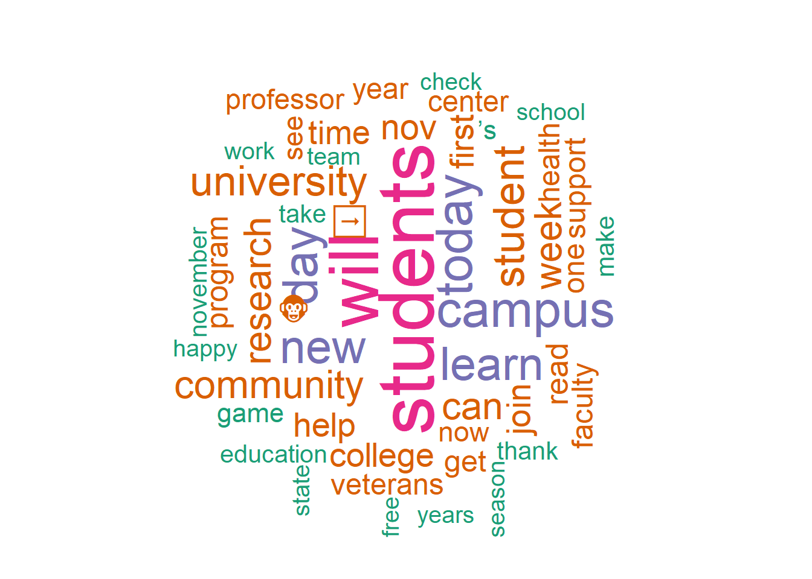

Final Project
Introduction
The pervasiveness of social media within contemporary culture only continues to increase. A Pew Research Center survey conducted in 2021 indicated that roughly 70% of American adults use at least one social media site – a proportion that increases to over 80% when considering younger generations. When it comes to American teens, 97% report using the Internet daily to connect with others, engage with content, and seek out information of interest.
The prominence of social media necessitates that businesses and service-oriented organizations maintain a presence on the platforms their target audiences frequent. Institutions of higher education are not exempt from this expectation; rather, the number of accounts associated with any particular college or university continues to increase as various audiences, including prospective and current students, alumni, and community members, seek out information and content they are interested in. Given this, institutions now employ entire teams of communications specialists to manage their online presence. Social media has become an increasingly important component of their overall communication and promotional strategies.
This research project seeks to explore how the 50 US flagship state public colleges are using Twitter. The included institutions were defined as the “flagship” based on the following characteristics: the institution is the most prominent public university within its state; it was usually the first public university to be established, and may include additional distinguishing characteristics such as boasting the largest research profile; and it has a NCAA Division I athletics program. In addition, the listed university may host the most doctoral programs and advanced degrees (including law and medicine) and may also receive the largest proportion of financial support from its parent state see this list as an example. The main Twitter profile of each of the most commonly listed 50 US flagship state schools were compiled for evaluation. More specifically, I intend to perform analysis on two facets of their social media presence: what is being produced by each college’s account, and what the response to those posts is. Overall, this research seeks to explore three primary questions:
- Are there consistencies in how colleges are using Twitter?
- What makes some posts more successful than others?
- Are there takeaways on how colleges can most effectively use Twitter?
Data
For this project, I have used the social media analytics tool Brandwatch to collect every Twitter post authored by one of the 50 flagship US colleges during the month of November 2022. I then exported this data to a .csv file that I subsequently loaded into R.
Load the dataset
#import data
FlagshipTwitter <- read_csv("_data/FlagshipTwitterUpdated.csv")
#import Author > School Name data
TWAuthor2School <- read_csv("_data/Author_SchoolName.csv")
#import enrollment data from CCIHE
EnrollmentData <- read_csv("_data/CCIHE2021PublicData.csv")
#remove rows where the Page Type isn't twitter
FlagshipTwitter2 <- subset(FlagshipTwitter, PageType =='twitter')
#rename the columns I intend to use for analysis
FlagshipTwitter3 <- rename(FlagshipTwitter2, c(Tweet = 'Full Text', MentionedAuthors = 'Mentioned Authors', TWFollowers = 'Twitter Followers', TWReply = 'Twitter Reply Count', TWRetweets = 'Twitter Retweets', TWLikes = 'Twitter Likes', Reach = 'Reach (new)', EngType = 'Engagement Type', URL = Url)) %>%
replace_na(list(EngType = "OG"))
#put columns I plan to use first
FlagshipTwitterUse <- select(FlagshipTwitter3, Author, Tweet, EngType, Date, TWFollowers, Impressions, Reach, TWLikes, TWRetweets, TWReply, Sentiment, everything())
#separate dates into respective date and time column
TwitterUse2 <- separate(FlagshipTwitterUse, Date, into = c("Date", "Time"), sep = " ")
TwitterUse2$Date <- parse_date(TwitterUse2$Date, format = "%m/%d/%Y")
TwitterUse2$Time <- parse_time(TwitterUse2$Time, format = "%H:%M")
#add weekdays column
TwitterUse2$Weekday <- weekdays(TwitterUse2$Date)
#create the version you're going to build from for this project
TW_Enr_Full <- TwitterUse2 %>%
left_join(TWAuthor2School, by = "Author") %>%
left_join(EnrollmentData, by = "SchoolName")
TW_Enr_Full$SizeSetting <- str_replace_all(TW_Enr_Full$SizeSetting, c("Four-year, large, primarily residential" ="LargePriRez", "Four-year, large, highly residential" = "LargeHighRez", "Four-year, large, primarily nonresidential" = "LargeNonRez", "Four-year, medium, primarily nonresidential" = "MedNonRez", "Four-year, medium, primarily nonresidential" = "MedPriRez", "Four-year, small, highly residential" = "SmallHighRez", "Four-year, medium, primarily residential" = "MedPriRez"))
TW_Enr_Full %>%
select(SchoolName, TWFollowers, F20Enrollment, SizeSetting, Date, Time, Weekday, EngType, Impressions, Reach, TWLikes, TWRetweets, TWReply, Sentiment, Tweet) # A tibble: 5,658 × 15
SchoolName TWFol…¹ F20En…² SizeS…³ Date Time Weekday EngType Impre…⁴
<chr> <dbl> <dbl> <chr> <date> <tim> <chr> <chr> <dbl>
1 The Univers… 189187 37840 LargeP… 2022-11-30 23:55 Wednes… OG 189187
2 University … 33885 18025 LargeP… 2022-11-30 23:50 Wednes… RETWEET 33885
3 University … 90003 37437 LargeP… 2022-11-30 23:47 Wednes… RETWEET 90003
4 University … 143148 30092 LargeH… 2022-11-30 23:30 Wednes… RETWEET 143148
5 University … 31394 20722 LargeN… 2022-11-30 23:30 Wednes… OG 33378
6 University … 33887 18025 LargeP… 2022-11-30 23:24 Wednes… OG 33887
7 University … 168145 31115 LargeN… 2022-11-30 23:10 Wednes… OG 233177
8 University … 72683 8899 MedNon… 2022-11-30 23:03 Wednes… RETWEET 72683
9 University … 72683 8899 MedNon… 2022-11-30 23:02 Wednes… REPLY 72683
10 University … 126437 33081 LargeP… 2022-11-30 23:00 Wednes… RETWEET 126437
# … with 5,648 more rows, 6 more variables: Reach <dbl>, TWLikes <dbl>,
# TWRetweets <dbl>, TWReply <dbl>, Sentiment <chr>, Tweet <chr>, and
# abbreviated variable names ¹TWFollowers, ²F20Enrollment, ³SizeSetting,
# ⁴ImpressionsDescribe the dataset
The dataset is comprised of the 5,658 posts that were made by the 50 US flagship colleges in November 2022. For each post, there are several associated variables that will be used for analysis. The 14 variables that are of particular interest for this project are:
- School Name: Which school authored each post.
- Twitter Followers: The number of Twitter followers the account had at the time of posting.
- F20 Enrollment: The enrollment at each school in the Fall of 2020.
- Size Setting: The size and setting designation for each school.
- Date: The date each post was authored.
- Time: The time each post was posted.
- Weekday: The day of the week each post was made.
- Engagement Type: A designation of whether the post was an original post (OG), a retweet of someone else’s post (RETWEET), a reply to another account’s post (REPLY), or quote tweet, a retweet of another account’s post with added commentary (QUOTE).
- Impressions: The sum of the followers of a tweet’s author and the followers of any retweeting authors.
- Reach: An estimate of how many people have actually seen/read a given post.
- Twitter Likes: The number of times Twitter users “liked” a given post.
- Twitter Retweets: The number of times Twitter users retweeted a given post on their own Twitter.
- Twitter Replies: The number of times Twitter users left a comment on a given post.
- Sentiment: An AI-driven interpretation of the content of each tweet that subsequently labels the post as either Positive, Negative, or Neutral.
- Tweet: The content of the tweet authored.
Visualization
How are the flagship colleges using Twitter?
If you consult with ten different social media managers you will very likely receive ten different answers about how they use Twitter to achieve their goals. Accordingly, I first want to explore how the different flagship college accounts are being used, namely: how often they are posting, when those posts are being published, and what types of posts they are.
Total number of posts made by each college
#number of posts made by each college
by_college <- TwitterUse2 %>%
count(Author) %>%
rename("Total_Posts" = "n") %>%
arrange(desc(Total_Posts))
#add column breaking down total posts by range
by_college_range2 <- by_college %>%
mutate(
post_range = case_when(
Total_Posts < 50 ~ "Under 50 posts",
Total_Posts < 100 ~ "50-100 posts",
Total_Posts < 150 ~ "100-149 posts",
Total_Posts < 200 ~ "150-200 posts",
Total_Posts > 200 ~ "200+ posts"))
#make a graph of number of posts made by each college
by_college_range2 %>%
arrange(Total_Posts) %>%
mutate(Author=factor(Author, levels=Author)) %>%
ggplot(aes(x=Author, y=Total_Posts)) +
geom_bar(stat='identity', fill="forest green", width = 0.4) +
labs(title = "Number of Posts Made by Each School", x = "School",y = "Total Number of Posts") +
theme(axis.text = element_text(size = 5, angle=90)) +
facet_wrap(~post_range, scales="free_x", ncol = 3) 
#summary statistics for Posts by College
summary(by_college$Total_Posts) Min. 1st Qu. Median Mean 3rd Qu. Max.
2.0 50.5 93.5 113.2 155.2 337.0 In an ideal world, this visualization would be sorted with under 50 posts first and the remaining facets following sequentially. Nonetheless, this visualization indicates that post volume varies significantly depending on the flagship college in question - from 337 (Rutgers) to only two (University of South Dakota).
In addition to post volume having a wide range overall (335), the IQR is also quite high (105). Further, the difference in posts (20) between the median (93) and the mean (113) also points to a high degree of variance and a lack of consistency in terms of how frequently each flagship college is posting on Twitter.
Number of original posts, retweets, quote tweet, and comments by each college
There are four different types of posts that can be made on Twitter: original posts, retweets, quote tweets, and comments. We can add further context to how frequently each account is posting by also considering what kind of posts they are making. This will also allow us to derive insight into whether different schools are employing strategies that lean more heavily into particular types of posts (and later, whether engagement varies depending on the type of post being made).
Because each college’s post volume varies widely, it is more prudent to examine engagement types by college by their proportion and not total volume.
#number of OG posts, retweets, comments made by each college
post_type_by_college <- TwitterUse2 %>%
replace_na(list(EngType = "OG")) %>%
group_by(Author, EngType) %>%
summarize(Count=n()) %>%
pivot_wider(names_from = EngType, values_from = Count)
post_types_by_college <- merge(by_college, post_type_by_college, by="Author")
#proportional breakdown of posts by each college
post_prop_college <- post_types_by_college %>%
mutate(OGProp = OG/Total_Posts*100) %>%
mutate(QuoteProp = QUOTE/Total_Posts*100) %>%
mutate(ReplyProp = REPLY/Total_Posts*100) %>%
mutate(RetweetProp = RETWEET/Total_Posts*100) %>%
select(Author, OGProp, QuoteProp, RetweetProp, ReplyProp)
summary(post_prop_college[c("OGProp", "QuoteProp", "ReplyProp", "RetweetProp")]) OGProp QuoteProp ReplyProp RetweetProp
Min. : 11.57 Min. : 0.4132 Min. : 0.2967 Min. : 3.636
1st Qu.: 31.44 1st Qu.: 2.1682 1st Qu.: 2.1971 1st Qu.:28.212
Median : 44.64 Median : 4.0270 Median : 5.8258 Median :44.835
Mean : 49.21 Mean : 5.6112 Mean : 8.0246 Mean :43.945
3rd Qu.: 63.44 3rd Qu.: 5.9041 3rd Qu.:10.8108 3rd Qu.:58.251
Max. :100.00 Max. :30.7692 Max. :37.2881 Max. :86.647
NA's :12 NA's :12 NA's :4 Original posts are the most common type of post, comprising on average almost half (49%) of posts made by the colleges. Retweets are the next most common type of engagement (40%), while quote tweets and replies are typically least utilized (4% and 6% respectively).
#visualizing post type frequency by school
ggplot(data=TW_Enr_Full) +
geom_bar(
mapping = aes(x = SchoolName, fill=EngType),
position="fill") +
labs(title = "Post Type Frequency by School", x = "School",y = "Proportion of Posts", fill = "Engagement Type") +
theme(axis.text = element_text(size = 3, angle=90)) 
This visualization helps to show that the majority of schools are employing two posts types with the greatest frequency – original posts, and retweets. There are indeed outliers for both; the University of South Dakota and University of Wyoming made only original posts, while the University of Iowa and University of New Hampshire’s posts were over 90% original (99% and 93% respectively). Conversely, the University at Buffalo and Rutgers University produce fewer original posts (13% and 12% respectively) and instead focus their posting strategy heavily on retweets (79% and 87% respectively).
While replies are not a typical engagement strategy for most of the colleges, two schools (the University of Idaho and the University of Kentucky) have a proportion of replies comprising over a third of their total volume (37% and 32% respectively). Similarly, while the majority of schools are not producing a high volume of quote tweets, the University of Vermont (35%), the University of Tennessee (23%), and UMass Amherst (18%) are utilizing this post type more frequently as part of their posting strategy.
Number of posts made on each day of the week
#number of posts made on each day of the week
TwitterUse2$Weekday <- weekdays(TwitterUse2$Date)
weekday_by_college <-TwitterUse2 %>%
group_by(Author, Weekday) %>%
summarize(Count=n()) %>%
pivot_wider(names_from = Weekday, values_from = Count) %>%
select(Author, Monday, Tuesday, Wednesday, Thursday, Friday, Saturday, Sunday)
weekday_by_college[is.na(weekday_by_college)] <- 0
weekday_by_college2 <- weekday_by_college %>%
mutate(total = rowSums(across(c(Monday, Tuesday, Wednesday, Thursday, Friday, Saturday, Sunday))))
#proportion of posts made on each day of the week
weekday_prop_college <- weekday_by_college2 %>%
mutate(MondayProp = Monday/total*100) %>%
mutate(TuesdayProp = Tuesday/total*100) %>%
mutate(WednesdayProp = Wednesday/total*100) %>%
mutate(ThursdayProp = Thursday/total*100) %>%
mutate(FridayProp = Friday/total*100) %>%
mutate(SaturdayProp = Saturday/total*100) %>%
mutate(SundayProp = Sunday/total*100) %>%
select(Author, MondayProp, TuesdayProp, WednesdayProp, ThursdayProp, FridayProp, SaturdayProp, SundayProp)
#visualizing posts by day by school
ggplot(data=TW_Enr_Full) +
geom_bar(
mapping = aes(x = SchoolName, fill=Weekday),
position="fill") +
labs(title = "Posts by Day by School", x = "School",y = "Proportion of Posts by Day") +
theme(axis.text = element_text(size = 3, angle=90))
summary(weekday_prop_college[c("MondayProp", "TuesdayProp", "WednesdayProp", "ThursdayProp", "FridayProp", "SaturdayProp", "SundayProp")]) MondayProp TuesdayProp WednesdayProp ThursdayProp
Min. : 0.00 Min. : 0.00 Min. : 7.692 Min. : 0.00
1st Qu.:11.49 1st Qu.:17.49 1st Qu.:14.704 1st Qu.:10.23
Median :14.21 Median :20.60 Median :18.524 Median :13.45
Mean :15.63 Mean :20.81 Mean :19.484 Mean :13.06
3rd Qu.:18.05 3rd Qu.:24.94 3rd Qu.:22.980 3rd Qu.:16.27
Max. :37.88 Max. :30.77 Max. :50.000 Max. :23.08
FridayProp SaturdayProp SundayProp
Min. : 3.75 Min. : 0.000 Min. : 0.000
1st Qu.:12.17 1st Qu.: 2.776 1st Qu.: 2.505
Median :15.26 Median : 7.020 Median : 5.897
Mean :16.06 Mean : 8.209 Mean : 6.739
3rd Qu.:18.30 3rd Qu.:12.180 3rd Qu.: 9.617
Max. :50.00 Max. :34.783 Max. :22.034 Across the dataset, the most common day of the week to post is Tuesday (21%) with Wednesday close behind (19%). The proportions of posts made on Fridays, Mondays (16% each), and Thursdays (13%) are quite similar. Weekends had the fewest posts (8% on Saturdays; 7% on Sundays).
Number of posts made during each time period of the day
For this analysis I have taken the timestamp from each post in the dataset and assigned it to one of four time periods: afternoon (noon to 6pm), evening (6pm to midnight), overnight (midnight to 6am), and morning (6am to noon) in order to determine the proportion of posts made by each school during each time block.
#add a time period label to each post based on when it was made
time_of_day <- TW_Enr_Full %>%
mutate(TimePeriod = format(Time, format="%H:%M:%S")) %>%
mutate(TimePeriod = replace(TimePeriod, TimePeriod >= "00:00:00" & TimePeriod < "05:59:59", "overnight")) %>%
mutate(TimePeriod = replace(TimePeriod, TimePeriod >= "06:00:00" & TimePeriod < "11:59:59", "morning")) %>%
mutate(TimePeriod = replace(TimePeriod, TimePeriod >= "12:00:00" & TimePeriod < "17:59:59", "afternoon")) %>%
mutate(TimePeriod = replace(TimePeriod, TimePeriod >= "18:00:00" & TimePeriod < "23:59:59", "evening")) %>%
select(Author, Date, Time, TimePeriod, Tweet)
#pivot data to provide a summary of posts by time of day by college
time_of_day_by_college <- time_of_day %>%
group_by(Author, TimePeriod) %>%
summarize(Count=n()) %>%
pivot_wider(names_from = TimePeriod, values_from = Count)
time_of_day_by_college[is.na(time_of_day_by_college)] <- 0
#adding a total row to the time of day breakdown
time_of_day_by_college2 <- time_of_day_by_college %>%
mutate(total = rowSums(across(c(afternoon, evening, morning, overnight))))
#proportion of posts made during each time period
time_prop_college <- time_of_day_by_college2 %>%
mutate(AftProp = afternoon/total*100) %>%
mutate(EveProp = evening/total*100) %>%
mutate(MornProp = morning/total*100) %>%
mutate(OvernightProp = overnight/total*100) %>%
select(Author, AftProp, EveProp, MornProp, OvernightProp)
#visualizing posts by time period by school
ggplot(data=time_of_day) +
geom_bar(
mapping = aes(x = Author, fill=TimePeriod),
position="fill") +
labs(title = "Posts by Time Period by School", x = "School",y = "Proportion of Posts by Time Period", fill = "Time Period") +
theme(axis.text = element_text(size = 3, angle=90))
summary(time_prop_college[c("AftProp", "EveProp", "MornProp", "OvernightProp")]) AftProp EveProp MornProp OvernightProp
Min. : 3.39 Min. : 0.00 Min. : 0.0000 Min. : 0.000
1st Qu.: 35.45 1st Qu.:39.55 1st Qu.: 0.0000 1st Qu.: 3.673
Median : 41.73 Median :44.20 Median : 0.0000 Median : 7.380
Mean : 42.07 Mean :46.54 Mean : 0.9940 Mean :10.390
3rd Qu.: 53.84 3rd Qu.:54.04 3rd Qu.: 0.8656 3rd Qu.:12.973
Max. :100.00 Max. :95.45 Max. :15.1260 Max. :60.000 Across the dataset, evening and afternoon posts were most common (47% and 42% respectively). Only 1% of posts were made during the morning time period.
I do believe that this time data may not be completely accurate; given the small proportion of morning posts it seems likely that the timestamps provided in the dataset (i) do not reflect local time when the post was made; and (ii) were also likely given in UTC and not in one of the more common time zones in the US. Given this, I am wary of deriving any insights from this data and would want to make adjustments to each time by adjusting it to the proper time zone for each respective college before continuing.
What is the response to the posts made by each college?
Making posts is certainly an important part of having a social media presence, but how your audience responds to those posts is crucial data that helps to guide social media strategy. Shouting into a vacuum is both inefficient and poor strategy; if no one is consuming and engaging with your content, why invest in creating it to begin with?
While there are several metrics that relate to post engagement – including likes, retweets, and replies by one’s Twitter audience – the metric I want to focus on for this analysis is reach. Reach is an estimate of the number of people that have actually seen/read a given post, and the reach listed in this dataset has been calculated using Brandwatch’s proprietary algorithm.
Average Reach by School
The first, and most basic, level of analysis we have performed is to look at the average reach of the posts made by each school during the month of November.
#Average reach for posts made by each college
eng_met_by_college <- TW_Enr_Full %>%
group_by(SchoolName) %>%
summarize(
Reach_Mean = mean(Reach,na.rm = TRUE),
Reach_Median = median(Reach, na.rm = TRUE),
Reach_Max = max(Reach, na.rm = TRUE),
Reach_Min = min(Reach, na.rm = TRUE)) %>%
arrange(desc(Reach_Mean))
#add column breaking down reach by range
eng_met_by_college_range <- eng_met_by_college %>%
mutate(
post_range = case_when(
Reach_Mean < 10000 ~ "Under 10k",
Reach_Mean < 15000 ~ "10k-15k",
Reach_Mean < 20000 ~ "15k-20k",
Reach_Mean < 25000 ~ "20-25k",
Reach_Mean < 30000 ~ "25k-30k",
Reach_Mean > 30000 ~ "30k+"))
#make a graph of number of average reach by each college
eng_met_by_college_range %>%
arrange(Reach_Mean) %>%
mutate(SchoolName=factor(SchoolName, levels=SchoolName)) %>%
ggplot(aes(x=SchoolName, y=Reach_Mean)) +
geom_bar(stat='identity', fill="forest green", width = 0.5) +
labs(title = "Average Reach by School", x = "School",y = "Average Reach") +
theme(axis.text = element_text(size = 5, angle = 90)) 
There was very clearly one outlier during the analysis period – the University of Kentucky – whose average reach was more than double (86,807) the next closest school (the University of Florida, at 40,746). Kentucky had several viral tweets during the month of November related to an incident in their residences where a drunk white female student assaulted a Black woman who was on duty as a desk clerk in a residence hall while also calling her racial epithets. This highlights the impact that viral incidents – in this case, a disturbing and disappointing one, although incidents with more positive sentiment can and indeed also do sometimes go viral – can have on an account’s metrics.
#make a graph of number of average reach by each college without Kentucky
eng_met_by_college_range %>%
arrange(Reach_Mean) %>%
filter(SchoolName != "University of Kentucky") %>%
mutate(SchoolName=factor(SchoolName, levels=SchoolName)) %>%
ggplot(aes(x=SchoolName, y=Reach_Mean)) +
geom_bar(stat='identity', fill="forest green", width = 0.5) +
labs(title = "Average Reach by School (Without Kentucky)", x = "School",y = "Average Reach") +
theme(axis.text = element_text(size = 5, angle = 90)) 
When we remove the University of Kentucky from the dataset, a range of average reach by school still remains, but there is greater consistency and a more steady increase from the school with the lowest average reach (the University of Wyoming at 3,073) to the school with the next-highest reach (the University of Florida at 40,746).
How does the size of each school impact its number of followers and reach?
Unlike businesses, colleges arguably do not have an endless pool of followers to draw from. Rather, it is likely that the majority of the people who follow a particular college’s account have an association with that school – most prominently, audiences like prospective and current students, alumni – and given this, schools with a larger enrollment base should be expected to have a larger following than smaller schools.
#calculating followers as a proportion of enrollment
foll_prop_enroll <- TW_Enr_Full %>%
mutate(FollowersByEnrollment = TWFollowers/F20Enrollment) %>%
mutate(ReachByFollowers = Reach/TWFollowers) %>%
mutate(ReachByEnrollment = Reach/F20Enrollment) %>%
select(SchoolName, Author, FollowersByEnrollment, ReachByFollowers, ReachByEnrollment, TWFollowers, F20Enrollment, Reach, SizeSetting)
#summarizing metrics by school
foll_prop_enroll_summary <- foll_prop_enroll %>%
group_by(SchoolName, Author) %>%
summarize(avgFollByEnroll = mean(FollowersByEnrollment),
avgReachbyFoll = mean(ReachByFollowers),
avgReachbyEnroll = mean(ReachByEnrollment),
avgReach = mean(Reach),
TWFollowers = max(TWFollowers)) %>%
left_join(EnrollmentData, by = "SchoolName") %>%
left_join(by_college, by = "Author") %>%
select(SchoolName, Author, Total_Posts, avgReach, avgFollByEnroll, avgReachbyFoll, avgReachbyEnroll, TWFollowers, F20Enrollment, SizeSetting)
foll_prop_enroll_summary$SizeSetting <- str_replace_all(foll_prop_enroll_summary$SizeSetting, c("Four-year, large, primarily residential" ="Large Mostly Rez", "Four-year, large, highly residential" = "Large High Rez", "Four-year, large, primarily nonresidential" = "Large Non Rez", "Four-year, medium, primarily nonresidential" = "Med Non Rez", "Four-year, medium, primarily nonresidential" = "Med Mostly Rez", "Four-year, small, highly residential" = "Small High Rez", "Four-year, medium, primarily residential" = "Med Mostly Rez"))
# Create a scatterplot mapping enrollment and followers
ggplot(foll_prop_enroll_summary,
aes(x=F20Enrollment, y=TWFollowers)) +
geom_point(color="red") +
geom_text_repel(aes(label = SchoolName), size = 1.5, max.overlaps = Inf) +
scale_y_continuous(labels = function(x) format(x, scientific = FALSE)) +
labs(title = "Relationship Between Enrollment and Followers", x = "Enrollment",y = "Followers") +
geom_smooth(formula = y ~ x, method=lm, se=FALSE)
There is indeed a correlation between the enrollment at a college and its Twitter followers; larger institutions should have more followers than smaller ones. On average, the flagship colleges have an average of 3.6 followers for every enrolled student. There is, however, a fairly large IQR (3). It would be of value to perform a deeper analysis of the difference between schools like Louisiana State, the University of Arkansas at Little Rock, and West Virginia University, who all have more than 7 followers for each enrolled student and schools like the University of Wyoming and the University at Buffalo, who have less than one follower for each of their enrolled students.
#summary statistics for average followers by enrollment
summary(foll_prop_enroll_summary[c("avgFollByEnroll")]) avgFollByEnroll
Min. : 0.3954
1st Qu.: 1.9101
Median : 3.5899
Mean : 3.6477
3rd Qu.: 4.9360
Max. :10.5433 What is the relationship between followers and reach for the flagship college Twitter accounts?
Following a Twitter account means that that account’s posts are likely to appear on that user’s Twitter feed. Accordingly, accounts with a higher number of Twitter followers have a greater likelihood that their posts will have a larger reach. Increased likelihood, however, is not a guarantee; posts from smaller accounts can go viral, while posts from larger accounts can fail to resonate with their intended audience. Plotting the relationship between Twitter followers and average post reach should show a correlation between the two variables; it should also provide us with some insight into which schools are more/less successful at generating the expected level of reach, and those schools could then be examined in greater detail.
ggplot(foll_prop_enroll_summary,
aes(x=TWFollowers, y=avgReach)) +
geom_point(color="red") +
geom_text_repel(aes(label = SchoolName), size = 1.5, max.overlaps = Inf) +
scale_y_continuous(labels = function(x) format(x, scientific = FALSE)) +
scale_x_continuous(labels = function(y) format(y, scientific = FALSE)) +
labs(title = "Relationship Between Followers and Reach", x = "Followers", y = "Average Post Reach") +
geom_smooth(formula = y ~ x, method=lm, se=FALSE)
There is indeed a strong correlation between number of followers and the average reach of each school’s posts. What’s immediately evident is that there is also one very significant outlier – the University of Kentucky, whose average reach this month was skewed significantly after a significant negative occurrence on campus and the response to it went viral. There are five other universities whose average post reach outpaced what would be expected given their following: the University of Idaho; the University of Virginia; the University of Tennessee, the University of South Carolina, and the University of Florida. There were tragic violent events involving students at both Idaho and Virginia, while Florida’s Board of Trustees selected a contentious candidate as their new President-elect. Meanwhile, Tennessee and South Carolina’s average reach was largely bolstered by athletics content, and in particular, posts about football.
Can we visualize a relationship between enrollment, followers, reach, and institution size?
I was really curious what would happen if I tried to plot college enrollment, Twitter followers, institution size and setting (as per Carnegie Classifications), and post reach.
#summarizing average followers by enrollment by reach for each school
ggplot(foll_prop_enroll_summary,
aes(x=F20Enrollment, y=TWFollowers, size=avgReach, color=SizeSetting)) +
geom_point(alpha=0.7) +
scale_y_continuous(labels = function(x) format(x, scientific = FALSE)) +
labs(title = "Relationship Between Enrollment, Followers, Reach, and Institution Size", x = "Enrollment",y = " Twitter Followers", color = "School Size & Setting", size="Post Reach") 
There are not many medium-sized flagship colleges, but it’s interesting to see all but one of them clumped together in the bottom left corner. The one outlying medium school is the University of Arkansas and I would love to further explore the why behind that.
Future work - more textual analysis
As a primarily qualitative researcher who performs a lot of content analysis, I’m particularly interested in diving deeper into what is being shared in each of the college’s tweets; I’m very interested in exploring how variables like topics, themes, and word choices impact engagement, and what kinds of similarities and differences exist across institutions of different sizes and regions.
To gain some experience and explore what I might be able to do with textual analysis in R, I started experimenting with some ways in which I might be able to examine tweet text.
Counting the number of characters in each Twitter post
While tweets are (currently) limited to only 280 characters, This could potentially be useful in determining whether post length contributes to or detracts from engagement.
#count the number of characters in each Twitter post
TwitterUse2$TweetCharCount = str_length(TwitterUse2$Tweet)
TwitterUse2 %>%
select(Author, TweetCharCount, Tweet) # A tibble: 5,658 × 3
Author TweetCharCount Tweet
<chr> <int> <chr>
1 UofAlabama 302 "Juggling, snakes and cooking - oh my! ICYMI: the…
2 uhmanoa 218 "RT @ManoaGrad Summer and Fall 2022 candidates - …
3 CUBoulder 255 "RT @CU_PTS We are thrilled to welcome two new el…
4 UNC 221 "RT @ChapelHillFD #CHtraffic Alert: Country Club …
5 unevadareno 301 "Save the date! @unevadareno will hold the 2022 W…
6 uhmanoa 289 "$3.4 million to grow Native Hawaiian physicians …
7 uarizona 176 "University of Arizona researchers are teaming up…
8 UArkansas 295 "RT @ArkansasPBS LIVESTREAMING: Join @HillaryClin…
9 UArkansas 51 "@prehistormic Your No. 1 song of the year, we ho…
10 UUtah 262 "RT @UofUIT If you haven’t already, check out @Ma…
# … with 5,648 more rows#find average number of characters in each college's posts
TweetAvgCharacters <- TwitterUse2 %>%
group_by(Author) %>%
summarize(
AvgTweetCharCount = mean(TweetCharCount, na.rm = TRUE))
TweetAvgCharacters# A tibble: 50 × 2
Author AvgTweetCharCount
<chr> <dbl>
1 CUBoulder 230.
2 IndianaUniv 234.
3 LSU 214.
4 Mizzou 189.
5 OhioState 140.
6 OleMiss 168.
7 penn_state 221.
8 RutgersU 213.
9 uafairbanks 219.
10 uarizona 240.
# … with 40 more rowsAthletics content on the flagship Twitter accounts
The use of athletics content to drive engagement is another topic that I have a particular interest in, and I was curious just how many of November’s 5,638 used seven keywords that would indicate with (near) certainty that the posts were about sports and sporting events.
#number of posts from November that were about athletics
DissectPosts <- TwitterUse2 %>%
select(Author, TWFollowers, Tweet, EngType, TweetCharCount, Reach, TWLikes, TWRetweets, TWReply)
DissectPostsAthletics <- DissectPosts %>%
filter(str_detect(Tweet, "FB|(?i)football|basketball|MBB|WBB|athletics|NCAA"))
DissectPostsAthletics# A tibble: 764 × 9
Author TWFollowers Tweet EngType Tweet…¹ Reach TWLikes TWRet…² TWReply
<chr> <dbl> <chr> <chr> <int> <dbl> <dbl> <dbl> <dbl>
1 WestVirginiaU 197557 "RT … RETWEET 102 21844 0 0 0
2 UUtah 126435 "RT … RETWEET 246 17988 0 0 0
3 UMassAmherst 57996 "Wha… OG 255 13263 5 1 0
4 Mizzou 137999 "RT … RETWEET 302 18695 0 0 0
5 UNLincoln 50787 "RT … RETWEET 140 11842 0 0 0
6 UUtah 126436 "RT … RETWEET 304 17988 0 0 0
7 RutgersU 141602 "RT … RETWEET 140 18907 0 0 0
8 uarizona 168142 "RT … RETWEET 275 20377 0 0 0
9 WestVirginiaU 197557 "We’… OG 106 48002 239 41 9
10 UTAustin 239275 "RT … RETWEET 315 23706 0 0 0
# … with 754 more rows, and abbreviated variable names ¹TweetCharCount,
# ²TWRetweets#determine how many athletics posts were made by each college
AthleticsPostsByCollege <- DissectPostsAthletics %>%
group_by(Author) %>%
summarize(Count=n()) %>%
left_join(post_types_by_college, by = "Author") %>%
select(Author, Count, Total_Posts) %>%
mutate(AthAvg = Count/Total_Posts*100) %>%
arrange(desc(AthAvg))
AthleticsPostsByCollege# A tibble: 42 × 4
Author Count Total_Posts AthAvg
<chr> <int> <int> <dbl>
1 OhioState 29 69 42.0
2 UofSC 24 74 32.4
3 RutgersU 97 337 28.8
4 UTAustin 41 158 25.9
5 UUtah 78 311 25.1
6 UofIllinois 26 108 24.1
7 UofOklahoma 48 203 23.6
8 umontana 8 34 23.5
9 UofAlabama 54 242 22.3
10 universityofga 39 189 20.6
# … with 32 more rows13% of all posts made by the college flagship Twitter accounts were about athletics. Ohio State had the greatest proportion of posts relating to athletics (42%), while the University of Iowa had the smallest proportion (one post, or 1.3% of their posts for the month). Rutgers had the largest volume of athletics posts (97), comprising 29% of their total posting volume.
Most common words used in Tweets
I also endeavored to make a word cloud to highlight the words that occurred most frequently in the college’s posts.
#Create a vector containing only the text
TweetText <- DissectPosts$Tweet
# Create a corpus
TweetCorpus <- Corpus(VectorSource(TweetText))
TweetCorpus <- TweetCorpus %>%
tm_map(removeNumbers) %>%
tm_map(removePunctuation) %>%
tm_map(stripWhitespace)
TweetCorpus <- tm_map(TweetCorpus, content_transformer(tolower))
TweetCorpus <- tm_map(TweetCorpus, removeWords, stopwords("english"))
dtm <- TermDocumentMatrix(TweetCorpus)
matrix <- as.matrix(dtm)
words <- sort(rowSums(matrix),decreasing=TRUE)
df <- data.frame(word = names(words),freq=words)
wordcloud(words = df$word, freq = df$freq, min.freq = 100, max.words=50, random.order=FALSE, rot.per=0.35, colors=brewer.pal(4, "Dark2"))
Having created this, I see a lot of opportunity to improve, and ideally, derive greater insight from this type of work with text. I’d be interested in exploring ways to look for phrases in addition to single keywords, as this may provide more topical and thematic insight. I would also want to build out more custom stopwords; I can see words like “make”, “now”, “take”, and “see” in the cloud, and it would be very difficult to derive any sort of meaningful insight from their use. Similarly, “’s” appears in the word cloud, and I would certainly want to exclude this and any other contractions.
Conclusion
While all 50 flagship colleges are using Twitter, the ways in which they elect to use it vary greatly; the volume of posts produced by each account and the type of posts that they choose to employ are the two primary variables that support this assertion.
When it comes to who follows the Twitter accounts of the flagship colleges, there is a relationship between each institution’s enrollment and its number of followers. Smaller institutions typically have fewer followers, while larger institutions have more. Understanding this relationship provides an opportunity to examine what the factors are that contribute to deviation from the expected trendline.
Similarly, there is also a correlative relationship between the number of followers that each account has and the average reach of their posts. I am particularly curious about what this relationship looks like with a larger dataset, as I suspect that examining a year’s worth of data as opposed to a month’s work would lessen the impact of viral posts related to significant events.
There are a lot of questions I still want to answer related to the factors that contribute to greater engagement on Twitter. I would like to continue layering different variables (the data related to posts by day of the week, or time posted, for example) and how this does/does not impact engagement.
Reflection
I knew that I wanted to explore something related to higher education social media use as this aligns with what I do for work and I’m very interested in adding to my “toolbox” as it relates to new ways to compile, break down and analyze social media data and provide insights related to what I’ve derived. Working through this project has also given me a lot of ideas about how incorporating work with R into our analysis process affords not just new opportunities for analysis, but process efficiency as well.
I didn’t come into the project with a fully developed research question; rather, I knew that I wanted to explore some aspect of higher ed social media data in a way that I have not done previously. I gravitated towards tweets that were authored by the colleges as I knew I could pull a dataset that would require less validation; unlike creating a dataset online conversation about the different institutions, which will inevitably bring in some degree of irrelevant data (ie. mentions that are not actually relevant to analysis), focusing on content produced by the colleges facilitated developing a robust dataset with fewer variables that could affect relevancy.
There are a lot of institutions of higher education in the US; in 2021, Carnegie provided classification data for 3,939 institutions. I knew it wasn’t going to be realistic or feasible to look at data for all US colleges, so I began to think about what might be a logical way to create a smaller dataset of colleges with some type of unifying characteristic. I decided on the flagship colleges as that characteristic; this served to decrease the number of colleges to a far more manageable 50. I knew I was going to build a query in Brandwatch, a social media analytics tool, and also knew that they receive more data from Twitter than any other social media platform, so I elected to focus exclusively on posts authored for Twitter.
I found a list identifying the 50 flagship US colleges and then compiled a list of the primary Twitter accounts associated with each of them. I used that information to write a Brandwatch query and pulled a dataset of all the posts made by the colleges between December 1 2021 and November 30 2022. This returned 78,700 mentions. I was originally wanted to use this larger dataset, but I ran into trouble exporting to R; while there is apparently an R Package to connect the Brandwatch API to R, I was unsuccessful in figuring out how to use it. My next option was to export from Brandwatch to .csv; as I am only able to download in batches of 10,000 mentions, I elected to narrow my dataset to fit within those parameters and accordingly reduced the time frame to November 1-30 2022.
The most challenging part of the project was narrowing my focus from exploratory analysis to answering specific questions about the data. There are so many directions and possibilities for this data and I found myself exploring multiple pathways but struggling to settle on a foundational question to answer. I found that this resulted in me overcommitting myself in terms of what, specifically, I wanted to analyze, and quickly realized that I needed to narrow my focus for my analysis. Accordingly, there are many different aspects of the dataset that I want to explore in greater detail.
One of the next steps I would very much be interested in making were I to continue with this project would be to explore using data related to the relationships between enrollment and Twitter followers, and between Twitter followers and average post reach to do some predictive modeling. Colleges are frequently interested in how their performance compares to that of their competitors, and this type of analysis could help to answer those questions and help to guide insights relating to why a particular institution’s data does/does not align with predictions.
While I learned a lot about R and its capabilities throughout this course and this project, I am very aware of how greater experience and familiarity with both R as a tool and programming languages in general would make my research process both easier and faster. Many of my code blocks are functional but clunky, and I look forward to increasing my knowledge related to what R can do and how I can execute different analysis tactics.
While I’m happy with the visualizations that I created for this project, I can similarly see how more time experimenting with ggplot and its capabilities would be beneficial so that I can produce visuals that more clearly express the assertions that I am trying to make.
Bibliography
- SOURCE: Data from twitter.com, compiled using brandwatch.com social analytics software.
- R Core Team (2022). R: A free software environment for statistical computing and graphics. The R Foundation for Statistical Computing, Vienna, Austria. R-project.org
- Wickham, Hadley & Grolemund, Garrett (2017). R For Data Science.
- The R Graph Gallery r-graph-gallery.com
- Pew Research Center (2021). Social Media Fact Sheet. pewresearch.org
- Pew Research Center (2022). Teens’ Views About Social Media. pewresearch.org
- Pew Research Center (2022). Teens, Social Media and Technology 2022. pewresearch.org
- The Carnegie Classification of Institutions of Higher Education (2021). 2021 Update Public File carnegieclassifications.ascent.edu
- Oglethorpe list of 50 flagship institutions and tuition by state (2022). olethorpe.edu
- DIY College Rankings: What are flagship universities? (2022). diycollegerankings.com